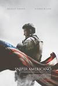

categotrias
para toda a familia
Gato de Botas 2: O Último Pedido
O Gato de Botas descobre que sua paixão pela aventura cobrou seu preço: ele já gastou oito de suas nove vidas. Ele então parte em uma jornada épica para encontrar o mítico Último Desejo e restaurar suas nove vidas
sonic 2 o filme
O Dr. Robotnik retorna à procura de uma esmeralda mística que tem o poder de destruir civilizações. Para detê-lo, Sonic se une a seu antigo parceiro, Tails, e parte em uma jornada para encontrar a joia antes que ela caia em mãos erradas.
SCOOBY! O Filme
Scooby e sua turma encaram o seu maior e mais difícil mistério de todos os tempos: um plano maligno para liberar o cão fantasma, Cérbero, no mundo. Enquanto corre para impedir esse "apocãolipse" global, a turma descobre que Scooby tem um legado secreto e um destino épico maior do que qualquer um podia imaginar.
ação
sniper-americano
Chris Kyle é um atirador de elite das forças especiais da marinha dos Estados Unidos. Durante a Guerra do Iraque, sua missão é proteger seus companheiros e seu dever faz dele um dos maiores atiradores da história norte-americana. Sua precisão salva inúmeras vidas, mas também o torna um alvo preferencial. Quando Kyle finalmente volta para casa, ele descobre que não tem como deixar a guerra para trás.
Bloodshot
Bloodshot é um ex-soldado com poderes especiais: regeneração e capacidade de se metamorfosear. Assassinado ao lado da esposa, ele é ressuscitado e aprimorado com nanotecnologia, desenvolvendo tais habilidades
V de Vingança
Após uma guerra mundial, a Inglaterra é ocupada por um governo fascista e vive sob um regime totalitário. Na luta pela liberdade, um vigilante, conhecido apenas como V, utiliza-se de táticas terroristas para enfrentar os opressores da sociedade. V salva uma jovem chamada Evey da polícia secreta e encontra nela uma nova aliada em busca de liberdade e justiça para o seu paí
classicos
O poderoso chefão
Uma família mafiosa luta para estabelecer sua supremacia nos Estados Unidos depois da Segunda Guerra Mundial. Uma tentativa de assassinato deixa o chefão Vito Corleone incapacitado e força os filhos Michael e Sonny a assumir os negócios
clube da luta
Um homem deprimido que sofre de insônia conhece um estranho vendedor chamado Tyler Durden e se vê morando em uma casa suja depois que seu perfeito apartamento é destruído. A dupla forma um clube com regras rígidas onde homens lutam. A parceria perfeita é comprometida quando uma mulher, Marla, atrai a atenção de Tyler.
Top Gun - Ases Indomáveis
A escola naval de pilotos é onde o melhor dos melhores treinam para refinar suas habilidades de voo de elite. Quando o piloto Maverick é enviado para a escola, sua atitude irresponsável e comportamento arrogante o colocam em desacordo com os outros pilotos, especialmente Iceman. Porém Maverick não está apenas competindo para ser o piloto superior de caça, ele também está lutando pela atenção de sua bonita instrutora de voo, Charlotte Blackwood.
terror
A entidade
Um autor de romances criminais encontra uma caixa com filmagens antigas de crimes horripilantes, que parecem ter sido cometidos por um assassino em série. Ao investigar, ele e sua família se tornam alvos de uma entidade sobrenatural maligna.
Annabelle 2: A Criação do Mal
Anos após a trágica morte de sua filha, um habilidoso artesão de bonecas e sua esposa decidem, por caridade, acolher em sua casa uma freira e dezenas de meninas desalojadas de um orfanato. Atormentado pelas lembranças traumáticas, o casal ainda precisa lidar com um amendrontador demônio do passado: Annabelle, criação do artesão.
Halloween Kills: O Terror Continua
Laurie Strode acredita que enfim venceu a luta contra Michael Myers, mas é surpreendida pelo seu retorno. Determinada a pôr um ponto final em seus ataques, ela e outros sobreviventes decidem enfrentá-lo e acabar com o ciclo de uma vez por todas